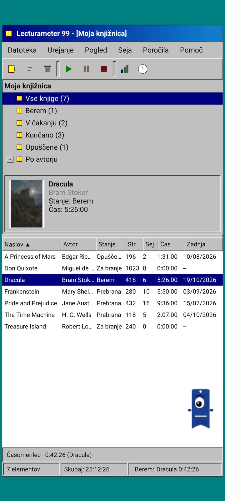
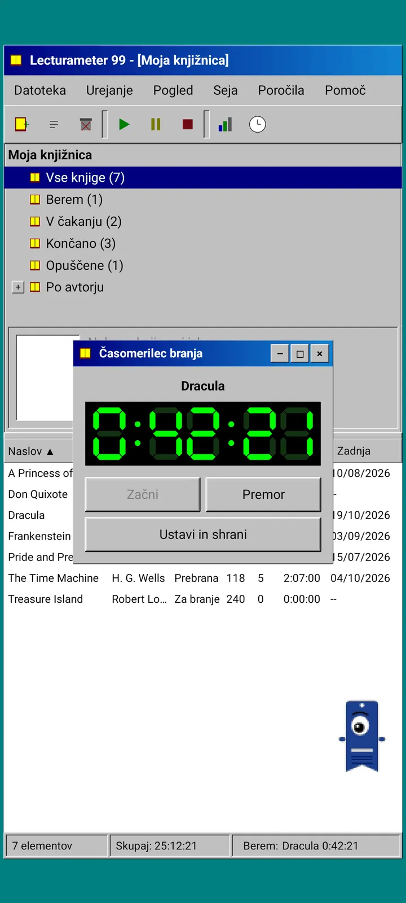
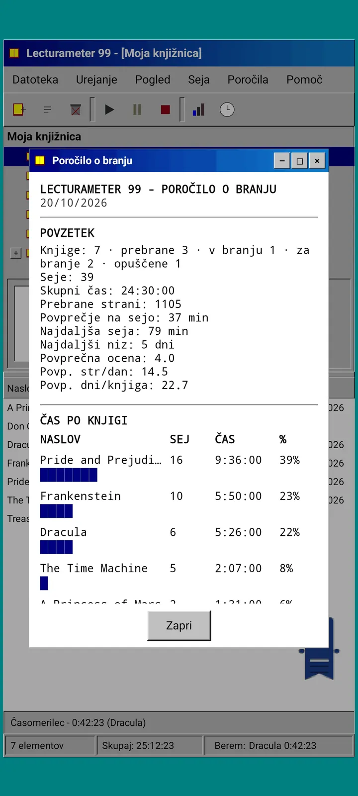
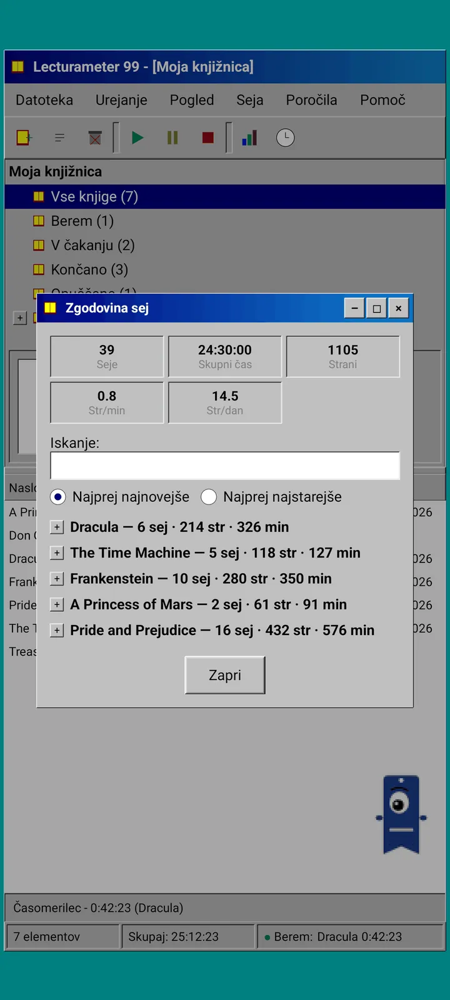
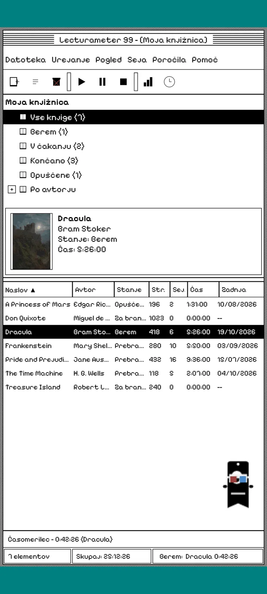
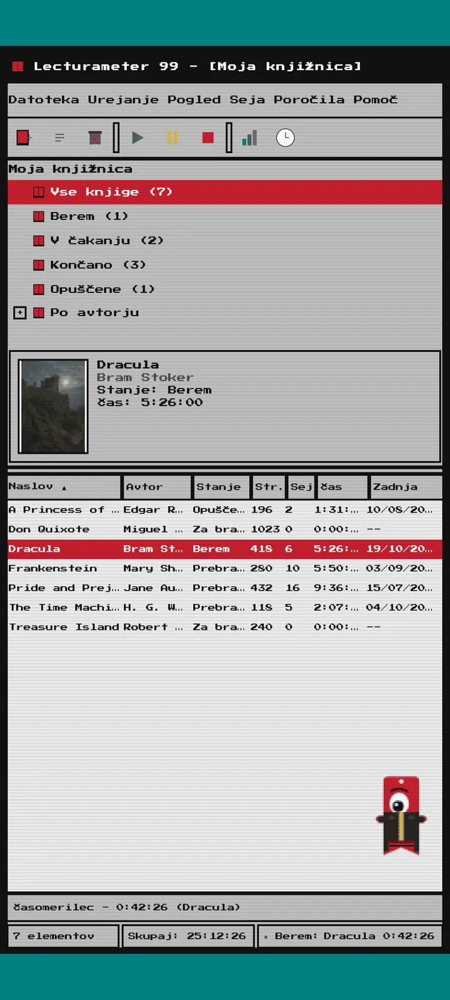
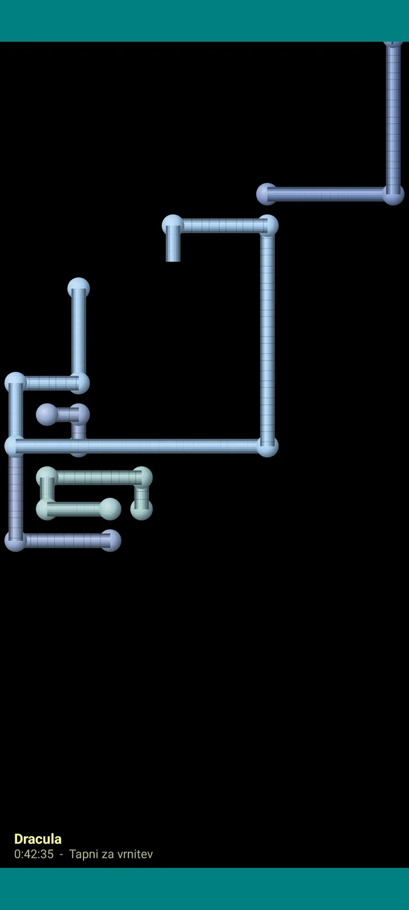

Lecturameter 1999
Lecturameter, kot da bi ga leta 1999 namestil(a) s CD-ROM-a. Alternativni odjemalec aplikacije z okni, meniji in tabelami, ki odpira tvoje prave varnostne kopije.

Kaj je to
Namizni program iz poznih devetdesetih, ki teče v tvojem telefonu. Eno okno nad turkiznim namizjem, menijska vrstica, orodna vrstica, drevo map, gosta tabela in vrstica stanja.
- Drevo knjižnice: vse knjige, berem, v čakanju, prebrano, opuščeno in po avtorju
- Tabela z naslovom, avtorjem, stanjem, stranmi, sejami, časom in zadnjim branjem. Tapni glavo stolpca za razvrščanje
- Pravo iskanje knjig z istim katalogom, ki ga uporablja Lecturameter
- Uvaža in izvaža varnostno kopijo Lecturameter in CSV iz Goodreads. Tvoji podatki gredo noter in ven brez izgub

Zakaj obstaja
Eksperiment: idejo aplikacije Lecturameter zgraditi znova od začetka z radikalno drugačnimi oblikovalskimi izhodišči, ne da bi se dotaknil prave aplikacije. Med vsemi reinterpretacijami mi je bila različica iz leta 1999 najbolj všeč, zato sem jo dokončal kot zabavno vajo in iz nje naredil popoln odjemalec. Namenoma je preprostejši od aplikacije Lecturameter: je eksperiment in se v osnovi ne bo več razvijal.
- Časovnik v plavajočem oknu z zelenim LCD zaslonom. Premika se, minimizira v opravilno vrstico in šteje naprej v vrstici stanja
- Ko ustaviš, pogovorno okno za shranjevanje seje vpraša po straneh in izračuna tvoj tempo, tako kot Lecturameter
- Shranjene seje so seje aplikacije Lecturameter: vrnejo se v sodobno aplikacijo, če izvoziš varnostno kopijo Lecturameter 1999 in jo uvoziš v Lecturameter.

Bralno poročilo
Statistika je natisnjeno poročilo: povzetek, čas po knjigah s stolpci iz blokov, hitrost v straneh na dan, koledar leta, narisan z znaki, in zadnjih sedem dni.

Zgodovina sej
Seje, združene po knjigah v drevesu s plusom in minusom, s petimi podatki na vrhu: seje, skupni čas, strani, strani na minuto in strani na dan.

Shrani sejo
Datum, minute, prva in zadnja stran, komentar. Povzetek sproti izračuna strani in tempo. Če prideš do zadnje strani, vpraša, ali si knjigo dokončal(a).

Pagi 99
Pagi potuje v leto 1999 tudi: pikseliziran in prost na zaslonu kot pisarniški pomočniki tistega časa. Lahko ga povlečeš, ob dotiku reče stavek in nasvete kaže v rumenih oblačkih.
Teme
Classic 98 je brezplačna in privzeta. Paket doda še šest, vsaka ima svoje ozadje in svoje zvoke.

Izberi jo v meniju Pogled
Pogled, Tema... odpre okno s sedmimi temami. Sprememba doseže vsa okna, časovnik in Pagi naenkrat.
- Classic 98, brezplačna in privzeta: siva okna, mornarsko modre naslovne vrstice in turkizno namizje
- Paket tem: 1984, Gumdrop, Memory, Towers, Core in 8-bit
- Vsaka tema prinese svoje ozadje namizja in svoje zvoke za dotike, okna in časovnik
- Pogled, Zvoki teme izklopi zvoke, če bereš v tišini

Classic 98
Siva okna, mornarsko modre naslovne vrstice in turkizno namizje. Brezplačna, z njo se aplikacija odpre.

1984
Enobitno črno-belo namizje z vzorci pik in kvadratnimi okni.

Gumdrop
Prosojna barvna plastika, zaobljeni gumbi in črte v ozadju.

Memory
Meniji igralne konzole z diski iz devetdesetih, v temno modrih odtenkih.

Towers
Še ena konzola z diski iz devetdesetih, nočno modra s svetlo modrimi črtami.

Core
Črno-zelena konzola, kot zaslon, ki se nikoli ne ugasne.

8-bit
Debeli piksli, malo barv in oglate črke.

Preizkusi, preden plačaš
Tapni zaklenjeno temo in vsa aplikacija se spremeni vanjo. Če zapreš, ne da bi kupil(a), se vrne prejšnja tema.
Ohranjevalniki zaslona
Prikažejo se samo, medtem ko časovnik teče in telefona ne uporabljaš. Čakajo 1, 3 ali 5 minut ali pa nikoli. En dotik te vrne nazaj in časovnik šteje naprej.

Leteče knjige
Pikselizirane knjige, ki mahajo s platnicami po črnem zaslonu.

Polje črk
Črke iz številnih abeced, ki plavajo mimo kot zvezdno polje.

Cevi iz strani
Cevi iz strani, ki se rišejo same, dokler se zaslon ne napolni.

Skakajoči Pagi
Pagi, ki se odbija od robov zaslona.

Bralna ura
Čas seje v velikih LCD številkah.

Kostumi za Pagi
Osem kostumov za Pagi 99. Izbereš jih v Pogled, Kostum Pagi... in jih lahko pomeriš, preden plačaš.
- Kasetofon
- Kapa obrnjena nazaj
- 3D očala
- Neonska sončna očala
- Disketa v roki
- Usnjena jakna
- Žepni ljubljenček
- Kartonasta krona
Trgovina
Aplikacija je brezplačna in popolna za beleženje branja. Kar lahko kupiš, spremeni samo videz.
Celotna aplikacija, brez časovne omejitve.
- Knjižnica, iskanje, časovnik in seje
- Bralno poročilo in zgodovina sej
- Varnostna kopija Lecturameter in CSV iz Goodreads, uvoz in izvoz
- Tema Classic 98 in Pagi 99
- Brez računa in brez oglasov
Enkratna plačila, brez naročnin.
- Paket tem, €3.49: 6 tem z ozadjem in zvoki ter ohranjevalniki zaslona
- Ohranjevalniki zaslona, €1.99: 5 ohranjevalnikov
- Kostumi za Pagi, €1.99: 8 kostumov
- Celoten 1999, €4.49: teme, ohranjevalniki zaslona in kostumi
Neobvezne napitnine v meniju Pomoč, če mi želiš kupiti kavo.
Teme in kostume lahko preizkusiš v živo, preden plačaš. Če zapreš, ne da bi kupil(a), se vrne, kar si imel(a).
Kaj je drugače v primerjavi z aplikacijo Lecturameter
Enako kot v aplikaciji Lecturameter
- Isti podatki: knjige, seje, stanja, ocene in zapiski. Datoteka varnostne kopije je v obeh aplikacijah enaka.
- Iskanje knjig po naslovu ali avtorju.
- Pravi časovnik: šteje naprej v ozadju in celo, če zapreš aplikacijo.
- Brez računa, brez oglasov, brez povezave, razen za iskanje knjig.
- Isti jeziki kot v aplikaciji Lecturameter.
Samo v izdaji 1999
- Namizni vmesnik iz leta 1999. Brez Material.
- Prava okna: povlečeš jih, minimiziraš in zapreš s križcem.
- Bralno poročilo v besedilu s koledarjem, narisanim z znaki.
- Kontekstni meni ob dolgem pritisku in bližnjice na tipkovnici, če priključiš tipkovnico.
- Pikseliziran Pagi 99 z oblački z nasveti.
- Neobvezne teme z lastnim ozadjem in zvoki, ohranjevalniki zaslona med tekom časovnika in kostumi za Pagi.
Kaj namenoma izpušča
- Brez Pro in brez naročnine. Beleženje branja je v celoti brezplačno, trgovina prodaja samo videz.
- Brez izzivov, bingov, letnega Wrapped ali pripomočkov.
- Brez poglobljene seje, zvokov okolja ali varnostnega kopiranja v Google Drive. Varnostna kopija se shrani kot datoteka.
Zaprto testiranje
Lecturameter 1999 je v zaprtem testiranju v Google Play. iOS pride pozneje, brez datuma.
- Pridruži se skupini groups.google.com/g/lecturameter-1999
- Prijavi se kot tester na play.google.com/apps/testing/com.lecturameter.r1999
- Namesti jo z Google Play
V zaprtem testiranju v Google Play, iOS pozneje. Preberi objavo na blogu da vidiš, od kod prihaja in kaj pričakovati.